library(MASS)QSBS Practical 2 — Estimating parameters and fitting distributions Answers
Introduction
In the previous practical we chose the parameters of a distribution ourselves. Here we turn the question around: given a set of measurements, which distribution, with which parameter values, describes these data best?
We are again using data from the MASS package, which also contains the function fitdistr(), so we make sure this package is loaded.
The survival times in Melanoma are recorded in days; we convert them to years, which makes all output easier to read.
surv_years <- Melanoma$time / 365.25Exercise 1
We toss a coin 100 times and observe 60 heads. The number of heads follows a binomial distribution with size = 100 and an unknown parameter p.
- Calculate the probability of this result if
p = 0.5, and the probability ifp = 0.6. Which of the two values ofpmakes the observed data more plausible? - Now treat this probability as a function of
p: calculate it for a fine grid of values ofpbetween 0 and 1 and plot the result. This curve is the likelihood function. - Read the maximum off the graph and find it exactly with
which.max(). Compare it with the analytical maximum likelihood estimator for the binomial distribution, \(\hat{p} = \bar{x}/n\) (Dormann, Sect. 3.3.3.3). - Plot the log-likelihood over the same grid. Does the maximum lie at the same place? Explain why taking the logarithm cannot move the maximum, and why we nevertheless prefer to work with log-likelihoods.
Answer
a. Both numbers come out of the same function, dbinom(), with the data fixed at 60 successes out of 100:
c(p_0.5 = dbinom(60, size = 100, prob = 0.5),
p_0.6 = dbinom(60, size = 100, prob = 0.6)) p_0.5 p_0.6
0.01084387 0.08121914 Observing 60 heads is about eight times more probable under p = 0.6 (0.081) than under p = 0.5 (0.011). We say that p = 0.6 has the higher likelihood given these data. Note that this is exactly the same number as the probability — the likelihood is not a new calculation, it is the same quantity read in the other direction: \(\mathcal{L}(\theta \mid \mathrm{data}) = P(\mathrm{data} \mid \theta)\).
b. Now we let p run over a grid and keep the data fixed:
p_grid <- seq(from = 0, to = 1, by = 0.001)
likelihood <- dbinom(60, size = 100, prob = p_grid)
plot(p_grid, likelihood, type = "l", lwd = 2, las = 1,
xlab = "p (probability of heads)", ylab = "likelihood L(p | 60 heads)")
abline(v = 0.6, col = "firebrick", lty = 2, lwd = 2)
points(c(0.5, 0.6), dbinom(60, 100, c(0.5, 0.6)), pch = 19, col = "steelblue")
text(0.5, dbinom(60, 100, 0.5), labels = "p = 0.5", pos = 2)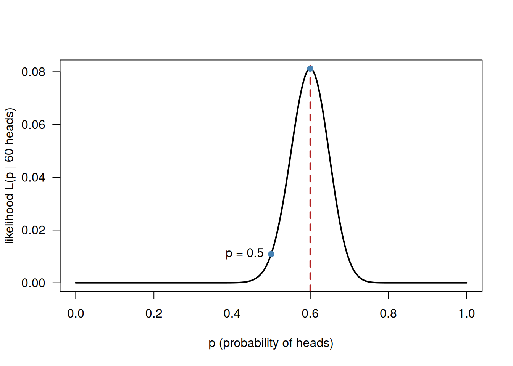
Watch the axes carefully. In the previous practical the x-axis carried the data (k) and the parameter was fixed; here the x-axis carries the parameter and the data are fixed. Both curves are produced by dbinom(), but they answer different questions. Also note that the likelihood curve is not a probability distribution: it does not integrate to 1 over p.
c. The maximum:
c(grid_maximum = p_grid[which.max(likelihood)],
analytical_MLE = 60 / 100) grid_maximum analytical_MLE
0.6 0.6 The maximum of the curve lies at p = 0.6, precisely the value given by the analytical maximum likelihood estimator \(\hat{p} = \bar{x}/n = 60/100\). The estimate is exactly the observed proportion of heads, which is reassuringly close to common sense: the parameter that makes the data most plausible is the one that reproduces the observed frequency.
d. The log-likelihood:
log_likelihood <- dbinom(60, size = 100, prob = p_grid, log = TRUE)
plot(p_grid, log_likelihood, type = "l", lwd = 2, las = 1, ylim = c(-60, 0),
xlab = "p (probability of heads)", ylab = "log-likelihood")
abline(v = 0.6, col = "firebrick", lty = 2, lwd = 2)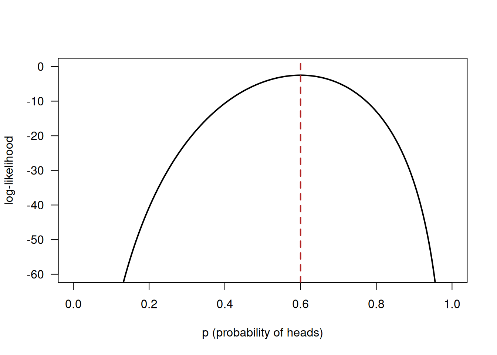
p_grid[which.max(log_likelihood)][1] 0.6The maximum is at exactly the same place. The logarithm is a monotonically increasing function: if \(a > b\) then \(\ln(a) > \ln(b)\). It can therefore stretch and squeeze the curve, but it cannot change which value of p is the largest. What we gain is numerical: as we will see in the next exercise, the likelihood of a real data set is a product of hundreds of small numbers and rapidly becomes too small for a computer to represent, whereas the log-likelihood is a sum of manageable numbers. This is why virtually all software reports \(\ell\) rather than \(\mathcal{L}\).
Exercise 2
We now move from one data point to a whole data set: the survival times surv_years of the 205 melanoma patients.
- Make a histogram of
surv_yearsand decide, by eye, whether a normal distribution is a plausible candidate. - Fit a normal distribution to these data with
fitdistr(). Report the two parameter estimates and their standard errors, and compare the estimates withmean(surv_years)andsd(surv_years). Are they identical? Should they be (see Dormann, Sect. 3.3.3.1)? - Calculate the likelihood of the data set “by hand” as the product of the densities of all 205 observations. Then calculate
prod(dnorm(rep(surv_years, 3), ...)), i.e. the same thing for a data set three times as long. Explain what you see. - Calculate the log-likelihood by hand in two ways: as
sum(log(dnorm(...)))and assum(dnorm(..., log = TRUE)). Check your result againstlogLik(fit). - Calculate AIC and BIC by hand from the log-likelihood, using \(\mathrm{AIC} = -2\ell + 2p\) and \(\mathrm{BIC} = -2\ell + \ln(n)p\), and check them against
AIC(fit)andBIC(fit). How many parameterspdid you use, and where can you see this number in the output oflogLik()?
Answer
a. A first look at the data:
hist(surv_years, breaks = 15, col = "grey90", las = 1,
xlab = "survival time (years)", main = "")
rug(surv_years)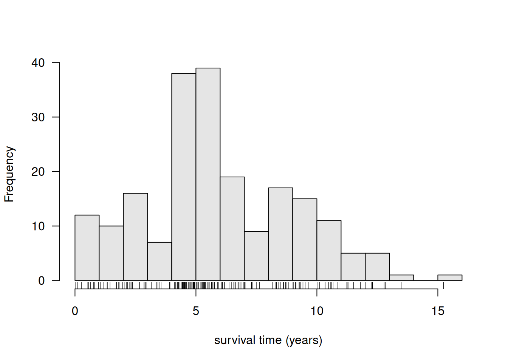
summary(surv_years) Min. 1st Qu. Median Mean 3rd Qu. Max.
0.02738 4.17522 5.48939 5.89405 8.32854 15.23614 The histogram is broad and roughly bell-shaped, with a slight right skew and a hard lower boundary at 0 (a survival time cannot be negative). Strictly speaking a normal distribution is therefore wrong, because it allows negative values. That does not mean it is useless: as Dormann puts it for the fir tree diameters, the distribution may be principally false but still be a useful description. That is exactly what we are going to test.
b. Fitting by maximum likelihood:
fit_norm <- fitdistr(surv_years, "normal")
fit_norm mean sd
5.8940452 3.0645328
(0.2140363) (0.1513465)The first line contains the estimates, the second line (in brackets) their standard errors. Comparison with the sample statistics:
rbind(
fitdistr = fit_norm$estimate,
sample = c(mean = mean(surv_years), sd = sd(surv_years))
) mean sd
fitdistr 5.894045 3.064533
sample 5.894045 3.072035The means are identical, and that is not a coincidence: Dormann shows analytically (Sect. 3.3.3.1) that the arithmetic mean is the maximum likelihood estimator of \(\mu\) for a normal distribution. The standard deviations differ very slightly (3.0645 versus 3.0720). The reason is the denominator: the maximum likelihood estimator divides the sum of squares by \(n\), whereas sd() divides by \(n - 1\) (the unbiased sample standard deviation). With \(n = 205\) the difference is negligible, but it is real:
c(mle_sd = sqrt(mean((surv_years - mean(surv_years))^2)),
sd_function = sd(surv_years)) mle_sd sd_function
3.064533 3.072035 c. The likelihood of the whole data set is the product of the individual densities, because the observations are assumed to be independent:
mu_hat <- fit_norm$estimate["mean"]
sigma_hat <- fit_norm$estimate["sd"]
# the first two observations
dnorm(surv_years[1:2], mean = mu_hat, sd = sigma_hat)[1] 0.02083230 0.02155378# all 205 of them multiplied together
prod(dnorm(surv_years, mean = mu_hat, sd = sigma_hat))[1] 9.261989e-227# and the same for a data set three times as long
prod(dnorm(rep(surv_years, 3), mean = mu_hat, sd = sigma_hat))[1] 0Multiplying 205 numbers that are all smaller than 1 gives \(9.3 \times 10^{-227}\): a number with 226 zeros after the decimal point. That is still just about representable, but with 615 observations the result is returned as exactly 0. The computer has run out of digits (underflow), not because the likelihood really is zero, but because a double cannot store numbers below roughly \(10^{-308}\). Any comparison of fits based on such a number would be worthless.
d. The cure is the logarithm, which turns the product into a sum (\(\log(ab) = \log a + \log b\)):
c(
sum_of_logs = sum(log(dnorm(surv_years, mean = mu_hat, sd = sigma_hat))),
log_argument = sum(dnorm(surv_years, mean = mu_hat, sd = sigma_hat, log = TRUE)),
from_logLik = as.numeric(logLik(fit_norm))
) sum_of_logs log_argument from_logLik
-520.4609 -520.4609 -520.4609 logLik(fit_norm)'log Lik.' -520.4609 (df=2)All three routes give \(\ell = -520.46\). The second version, with log = TRUE inside dnorm(), is preferable: it computes the logarithm of the density directly and therefore never creates the tiny intermediate numbers that could underflow. For the same reason it also works for the 615-observation data set, where the first version would fail.
Note that a log-likelihood is almost always negative (densities smaller than 1 have negative logarithms) and that its absolute value has no meaning on its own — only differences between log-likelihoods of the same data set are interpretable.
e. AIC and BIC by hand:
ll <- as.numeric(logLik(fit_norm))
n <- length(surv_years)
p <- 2 # mu and sigma
rbind(
by_hand = c(AIC = -2 * ll + 2 * p, BIC = -2 * ll + log(n) * p),
by_function = c(AIC = AIC(fit_norm), BIC = BIC(fit_norm))
) AIC BIC
by_hand 1044.922 1051.568
by_function 1044.922 1051.568We estimated \(p = 2\) parameters, and R reports this itself as df=2 in the output of logLik() (“degrees of freedom”). Both criteria start from \(-2\ell\), so that lower becomes better, and then add a penalty for each estimated parameter: 2 per parameter for the AIC, \(\ln(n) = \ln(205) = 5.3\) per parameter for the BIC. The BIC therefore punishes extra parameters more severely than the AIC as soon as \(n > 7\).
Exercise 3
Which distribution describes the melanoma survival times best? Fit four continuous distributions to surv_years with fitdistr(): the normal, the log-normal, the gamma and the Weibull distribution.
- Collect the log-likelihood, the AIC and the BIC of the four fits in one small table.
- Which distribution fits best according to the log-likelihood, and which according to AIC and BIC? Do the three criteria agree here? Would you expect them to agree in general?
- Draw the four fitted densities on top of a density histogram of the data, each in its own colour, and add the empirical density curve. Does the figure agree with the ranking from the table? Where exactly do the poor fits go wrong?
- All four distributions have two parameters here. Explain what would change in the comparison if one of the candidates had only one parameter, and why we cannot simply pick the distribution with the highest log-likelihood in that case.
Answer
a. We fit the four distributions and put all the fits in a list, so that we can treat them in one go:
fit_norm <- fitdistr(surv_years, "normal")
fit_lnorm <- fitdistr(surv_years, "lognormal")
fit_gamma <- fitdistr(surv_years, "gamma")
fit_weib <- fitdistr(surv_years, "weibull")
fits <- list(normal = fit_norm, lognormal = fit_lnorm,
gamma = fit_gamma, weibull = fit_weib)
comparison <- sapply(fits, function(f) c(logLik = as.numeric(logLik(f)),
AIC = AIC(f),
BIC = BIC(f)))
round(comparison, 2) normal lognormal gamma weibull
logLik -520.46 -578.78 -534.54 -521.65
AIC 1044.92 1161.57 1073.08 1047.31
BIC 1051.57 1168.21 1079.73 1053.95The parameter estimates themselves are worth a look too, since every distribution has its own parameter names:
lapply(fits, function(f) round(f$estimate, 3))$normal
mean sd
5.894 3.065
$lognormal
meanlog sdlog
1.547 0.867
$gamma
shape rate
2.355 0.400
$weibull
shape scale
1.889 6.569 b. The normal distribution has the highest (least negative) log-likelihood, \(-520.5\), and consequently also the lowest AIC (1044.9) and the lowest BIC (1051.6). The Weibull distribution follows closely behind (\(\ell = -521.7\), AIC 1047.3), the gamma distribution is clearly worse, and the log-normal distribution is by far the worst (AIC 1161.6, more than 100 units above the winner).
The three criteria agree here, and they must agree in this particular case, because all four distributions have exactly two parameters: the penalty term is then the same for all four, so ordering by \(\ell\), by AIC and by BIC gives the same ranking. In general they need not agree: as soon as the candidates differ in the number of parameters, the log-likelihood always favours the most flexible one, while the AIC and especially the BIC may prefer a simpler distribution.
As a rule of thumb, a difference in AIC of less than about 2 is not convincing evidence. The gap between the normal and the Weibull distribution (1047.3 - 1044.9 = 2.4) is therefore modest: these two are practically tied. The gap to the log-normal is enormous and leaves no doubt.
c. The visual check:
hist(surv_years, breaks = 15, probability = TRUE, col = "grey93", border = "grey60",
las = 1, ylim = c(0, 0.18),
xlab = "survival time (years)", main = "")
rug(surv_years)
curve(dnorm(x, fit_norm$estimate[1], fit_norm$estimate[2]),
add = TRUE, lwd = 2, col = "black")
curve(dweibull(x, fit_weib$estimate[1], fit_weib$estimate[2]),
add = TRUE, lwd = 2, col = "firebrick")
curve(dgamma(x, fit_gamma$estimate[1], fit_gamma$estimate[2]),
add = TRUE, lwd = 2, col = "darkgreen")
curve(dlnorm(x, fit_lnorm$estimate[1], fit_lnorm$estimate[2]),
add = TRUE, lwd = 2, col = "steelblue")
lines(density(surv_years), lwd = 2, lty = 2, col = "grey30")
legend("topright", bty = "n", lwd = 2,
col = c("black", "firebrick", "darkgreen", "steelblue", "grey30"),
lty = c(1, 1, 1, 1, 2),
legend = c("normal", "Weibull", "gamma", "log-normal", "empirical density"))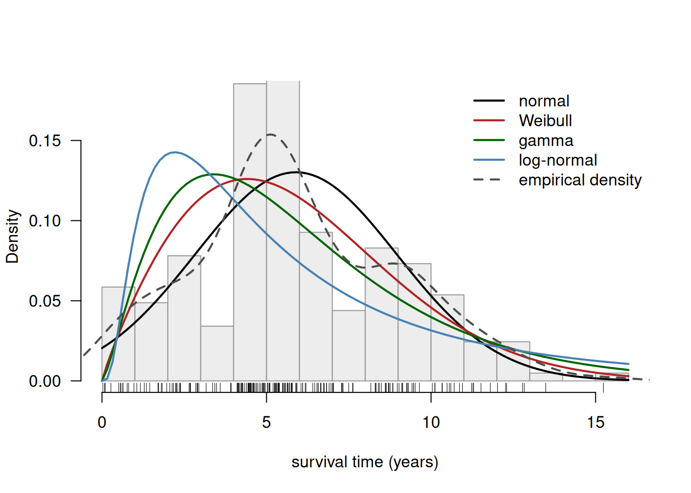
The figure confirms the table. The normal and the Weibull curve are almost indistinguishable over most of the range and both follow the histogram well; the Weibull curve is slightly better at the left edge (it cannot go below 0) and slightly worse around the peak. The gamma and especially the log-normal curve are far too high near zero and have far too long a right tail: they are strongly right-skewed distributions, and these data are only mildly skewed. This is where their likelihood is lost — a log-normal distribution assigns a lot of probability density to short survival times that simply are not observed, and hands out relatively little density in the region between 4 and 8 years where most of the observations actually lie.
d. With an unequal number of parameters the raw log-likelihood becomes useless as a criterion. A distribution with more parameters is more flexible and can therefore always follow the data at least as well, so it will practically always have a higher \(\ell\) — even if the extra flexibility is only fitting noise. The AIC and BIC solve this by adding a penalty of 2 (respectively \(\ln n\)) per parameter: a distribution with one extra parameter must improve the log-likelihood by more than 1 unit (AIC) before it is declared better. In Dormann’s ash tree example the normal distribution (2 parameters) is compared with a Poisson distribution (1 parameter) in exactly this way; there the normal distribution wins on all fronts, so the penalty does not decide the outcome. In Exercise 6 we will see a case where the number of parameters does differ.
Exercise 4
The likelihood is not the only way to judge a fit. In this exercise we compare the fitted distributions with the empirical cumulative distribution function of the data (Dormann, Sect. 4.3).
- Plot
ecdf(surv_years)and add, in a different colour, the cumulative distribution function of the fitted normal distribution usingcurve(pnorm(...), add = TRUE). Make the same plot for the fitted log-normal distribution next to it (usepar(mfrow = c(1, 2))). - Where in the figure is the largest vertical distance between the two curves, roughly, and how large is it?
- Run a Kolmogorov-Smirnov test of the data against each of the four distributions you fitted in Exercise 3. Report
Dand the p-value for each. - Interpret: does the ranking by
Dagree with the ranking by AIC? What is the null hypothesis of this test, and what does a p-value of, say, 0.049 mean here? - R gives a warning about ties. Explain what a tie is, why it is a problem for this test, and check with
sum(duplicated(surv_years))how many there are. - A second, more fundamental problem is that we estimated the parameters of the reference distribution from the same data. Explain why this makes the p-value too optimistic, and name the test that corrects for this (Dormann, Side Note 3 and Sect. 4.4).
Answer
a. The ECDF is the cumulative version of the data: a staircase that rises by \(1/n\) at every observation. It is the natural thing to compare with a theoretical cumulative distribution function, because both live on the same scale (0 to 1) and neither depends on an arbitrary choice of histogram bins.
par(mfrow = c(1, 2), mar = c(4, 4.5, 3, 1))
plot(ecdf(surv_years), verticals = TRUE, pch = "", las = 1,
main = "normal", xlab = "survival time (years)", ylab = "Fn(x)")
curve(pnorm(x, fit_norm$estimate[1], fit_norm$estimate[2]),
add = TRUE, lwd = 3, col = "firebrick")
lines(ecdf(surv_years), verticals = TRUE, pch = "")
plot(ecdf(surv_years), verticals = TRUE, pch = "", las = 1,
main = "log-normal", xlab = "survival time (years)", ylab = "Fn(x)")
curve(plnorm(x, fit_lnorm$estimate[1], fit_lnorm$estimate[2]),
add = TRUE, lwd = 3, col = "firebrick")
lines(ecdf(surv_years), verticals = TRUE, pch = "")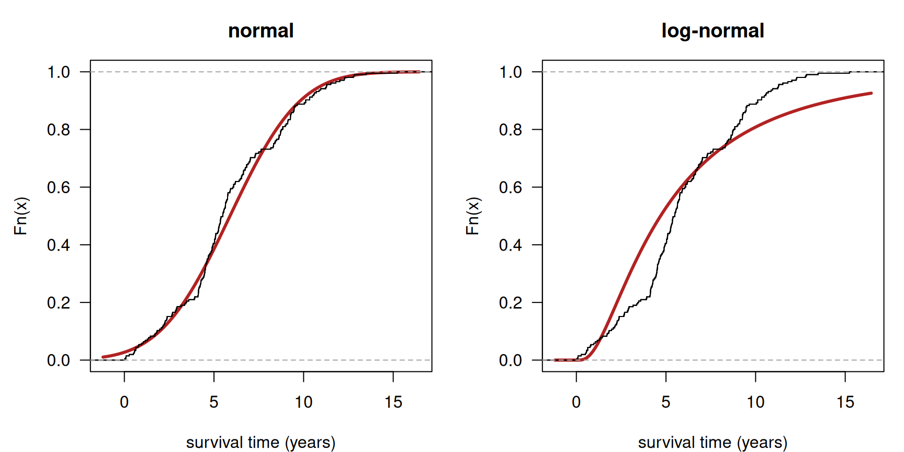
par(mfrow = c(1, 1))b. For the normal distribution the two curves run close together everywhere; the widest gap is in the middle of the range, at a survival time of roughly 6 years, where the staircase runs above the red curve — around the median slightly more patients have already been reached than the fitted normal distribution predicts. For the log-normal distribution the gap is much larger and lies lower down, around 4 years, and it has the opposite sign: there the red curve runs well above the staircase, i.e. the log-normal distribution predicts far more short survival times than were actually observed. We can locate the largest gap exactly, which is precisely what the KS test statistic D is:
sorted <- sort(surv_years)
ecdf_values <- (1:length(sorted)) / length(sorted)
gap_norm <- abs(ecdf_values - pnorm(sorted, fit_norm$estimate[1], fit_norm$estimate[2]))
gap_lnorm <- abs(ecdf_values - plnorm(sorted, fit_lnorm$estimate[1], fit_lnorm$estimate[2]))
rbind(
normal = c(largest_gap = max(gap_norm), at_survival_time = sorted[which.max(gap_norm)]),
lognormal = c(largest_gap = max(gap_lnorm), at_survival_time = sorted[which.max(gap_lnorm)])
) largest_gap at_survival_time
normal 0.0950263 5.782341
lognormal 0.2138142 4.104038c. The same comparison as a formal test, for all four distributions:
ks_norm <- ks.test(surv_years, "pnorm", fit_norm$estimate[1], fit_norm$estimate[2])
ks_weib <- ks.test(surv_years, "pweibull", fit_weib$estimate[1], fit_weib$estimate[2])
ks_gamma <- ks.test(surv_years, "pgamma", fit_gamma$estimate[1], fit_gamma$estimate[2])
ks_lnorm <- ks.test(surv_years, "plnorm", fit_lnorm$estimate[1], fit_lnorm$estimate[2])
ks_norm
Asymptotic one-sample Kolmogorov-Smirnov test
data: surv_years
D = 0.095026, p-value = 0.04933
alternative hypothesis: two-sidedks_results <- sapply(list(normal = ks_norm, weibull = ks_weib,
gamma = ks_gamma, lognormal = ks_lnorm),
function(k) c(D = as.numeric(k$statistic), p = k$p.value))
signif(ks_results, 3) normal weibull gamma lognormal
D 0.0950 0.11800 1.63e-01 2.19e-01
p 0.0493 0.00689 3.78e-05 6.10e-09d. The ranking by D (normal 0.095 < Weibull 0.118 < gamma 0.163 < log-normal 0.219) is exactly the same as the ranking by AIC in Exercise 3. That is encouraging but not guaranteed: the two criteria measure different things. D is a purely local measure — the single largest vertical gap, ignoring how good or bad the fit is everywhere else — whereas the log-likelihood uses every observation.
The null hypothesis of the test is that the data were drawn from the specified distribution. A large D and a small p-value are evidence against that distribution. Note the asymmetry: a large p-value is not proof that the distribution is correct, only that we failed to demonstrate a difference.
For the normal distribution we get \(D = 0.095\) with \(p = 0.049\): just below the conventional 5% threshold, so on a strict reading we would reject even our best candidate. This is a good illustration of why the graphical comparison in (a) is more informative than the p-value. The picture shows a small, systematic discrepancy in the lower tail, and with 205 observations that is enough to become “significant”. Whether such a deviation matters depends on what we want to do with the distribution, not on whether the p-value happens to fall on one or the other side of 0.05.
e. A tie is a value that occurs more than once in the data set. The exact p-value of the KS test is derived for continuous data, in which two observations are never exactly equal; with ties the ECDF makes jumps larger than \(1/n\) and the formula no longer holds, so R falls back on an approximation and warns us.
sum(duplicated(surv_years))[1] 11There are 11 duplicated values among 205 observations. That is few, and with a data set of this size the approximate p-value is still usable — but the ties are real, because survival times were recorded in whole days.
f. The p-value of the KS test assumes that the reference distribution is fixed in advance. We did the opposite: we used fitdistr() to choose exactly those parameter values that make the distribution resemble these data as closely as possible. The fitted distribution therefore hugs the data more tightly than a distribution specified beforehand would, D comes out too small, and the p-value comes out too large. In other words, the test is too lenient — which makes the borderline \(p = 0.049\) for the normal distribution look even less flattering.
The Lilliefors test (lillie.test() in the nortest package) is the corrected variant of the KS test for exactly this situation. Dormann also mentions the Shapiro-Wilk test, the Anderson-Darling test (ad.test() in ADGofTest), the Cramér-von-Mises test and the Pearson \(\chi^2\) test. If those packages are installed you can compare them:
library(nortest)
lillie.test(surv_years)
library(ADGofTest)
ad.test(surv_years, pnorm, mean = fit_norm$estimate[1], sd = fit_norm$estimate[2])Exercise 5
Section 4.4 of Dormann discusses formal tests for normality, and warns that they should not be trusted blindly.
- Apply
shapiro.test()tosurv_years, tolog(surv_years), tocats$Bwtand toquine$Days. ReportWand the p-value for each and state your conclusion for each variable. - Make a QQ-plot (
qqnorm()withqqline()) for each of these four variables. Describe for each what the QQ-plot tells you that the p-value does not, in particular how the variable deviates from normality (skew, heavy tails, discreteness, …). log(surv_years)is worse thansurv_yearsaccording to the test. Explain why taking logarithms is not automatically an improvement.- Now demonstrate the sample-size problem. Simulate 2000 values from a clearly non-normal distribution, e.g.
set.seed(1); big <- rlnorm(2000, meanlog = 0, sdlog = 0.6), and applyshapiro.test()to the first 10, 20, 50, 100, 500 and 2000 values. Report the p-values and explain what this shows about the usefulness of a normality test on a small sample and on a very large sample.
Answer
a. The Shapiro-Wilk test is purely a test for normality; W is close to 1 when the data are normal.
variables <- list(surv_years = surv_years,
log_surv_years = log(surv_years),
cats_Bwt = cats$Bwt,
quine_Days = quine$Days)
shapiro_results <- sapply(variables, function(v) {
test <- shapiro.test(v)
c(W = as.numeric(test$statistic), p = test$p.value)
})
signif(shapiro_results, 3) surv_years log_surv_years cats_Bwt quine_Days
W 0.97900 7.76e-01 9.52e-01 8.36e-01
p 0.00428 2.03e-16 6.73e-05 1.81e-11All four p-values are below 0.05, so formally normality is rejected in every case. But the four W values tell a much more differentiated story: surv_years (\(W = 0.979\)) is close to normal, cats$Bwt (\(W = 0.952\)) somewhat less so, and log(surv_years) (\(W = 0.776\)) and quine$Days (\(W = 0.836\)) are far off. Reporting only “p < 0.05, not normal” throws away that information.
b. The QQ-plot compares the quantiles of the data (y-axis) with the quantiles expected under a normal distribution (x-axis). If the data are normal the points lie on the straight line; the shape of the deviation tells us what kind of departure we are dealing with.
par(mfrow = c(2, 2))
for (nm in names(variables)) {
qqnorm(variables[[nm]], main = nm, las = 1, pch = 19,
col = rgb(0.1, 0.35, 0.65, 0.5))
qqline(variables[[nm]], col = "firebrick", lwd = 2)
}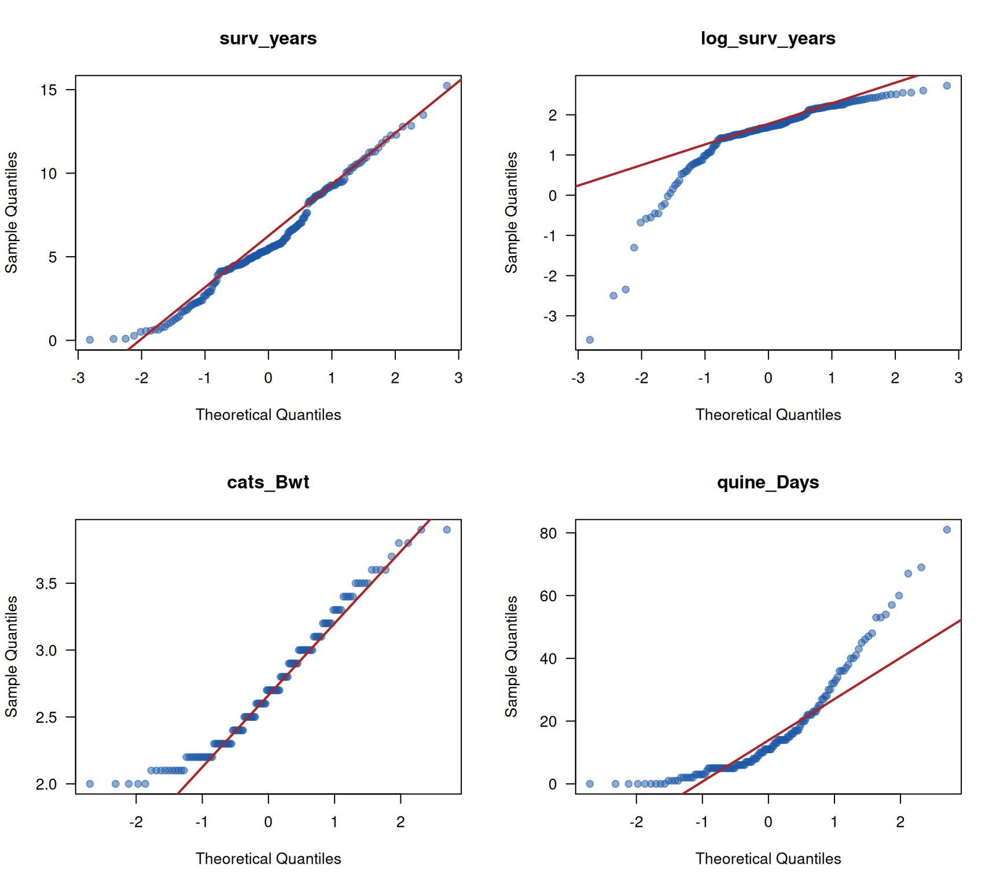
par(mfrow = c(1, 1))surv_years: the points follow the line closely over most of the range, with a mild S-shape and a slightly short left tail. This is the small systematic deviation we already saw in the ECDF plot of Exercise 4 — a defensible fit.log(surv_years): a dramatic downward bend on the left. Taking logarithms has produced a strong left skew and a few extreme low values.cats$Bwt: a wavy pattern with steps, reflecting both the mixture of the two sexes and the fact that weights were rounded to 0.1 kg.quine$Days: a strongly convex curve, the signature of pronounced right skew, plus visible horizontal stretches because these are counts (many children share the same value).
The p-values in (a) said “not normal” four times; the QQ-plots explain why, and make clear that the first case is nothing like the other three.
c. Logarithms compress large values and stretch small ones. That is the right medicine for right-skewed data with a long upper tail. surv_years is only mildly right-skewed but contains a handful of very short survival times (the minimum is 0.03 years, about 10 days). After taking logarithms those few small values are pulled far away from the rest, and the mild right skew is converted into a heavy left skew. A transformation must always be checked afterwards, exactly as we are doing here: the result has to satisfy the assumptions of the new distribution, and there is no guarantee of that in advance.
d. The sample-size demonstration:
set.seed(1)
big <- rlnorm(2000, meanlog = 0, sdlog = 0.6)
sizes <- c(10, 20, 50, 100, 500, 2000)
sample_size_effect <- sapply(sizes, function(n) {
test <- shapiro.test(big[1:n])
c(n = n, W = as.numeric(test$statistic), p = test$p.value)
})
signif(sample_size_effect, 3) [,1] [,2] [,3] [,4] [,5] [,6]
n 10.0000 20.000 50.000 1.00e+02 5.00e+02 2.00e+03
W 0.8630 0.958 0.966 8.75e-01 7.76e-01 8.14e-01
p 0.0826 0.511 0.158 1.08e-07 1.37e-25 3.25e-43Every one of these samples comes from the same log-normal distribution, which is definitely not normal. Nevertheless the test does not detect this at \(n = 10\), 20 or 50 (\(p\) between 0.08 and 0.51), while from \(n = 100\) onwards the p-value collapses: \(10^{-7}\), then \(10^{-25}\), then \(10^{-43}\). Look at W alongside it. It does not decrease steadily with n: at \(n = 20\) and \(n = 50\) it is actually higher (0.96, 0.97) than at \(n = 10\) (0.86), simply because a small sample is dominated by luck of the draw. Only from about \(n = 100\) does W settle down, around 0.78-0.87, close to the value it will keep for this distribution. The population being sampled never changes; what changes is how reliably a sample of that size reflects it.
The conclusion is uncomfortable but important. With a small sample the test almost never rejects, so “p > 0.05” is no evidence of normality — it usually just means we have too little data. With a very large sample the test rejects almost always, because every real data set deviates a little from a mathematical ideal, and a large n makes even a trivial deviation significant. A normality test therefore mostly measures your sample size. The QQ-plot from part (b) measures the thing you actually care about: how big the deviation is, and in which direction.
Exercise 6
Someone left a data set scribbled on a piece of paper behind on the tram. These are whole numbers, so both a normal and a Poisson distribution are conceivable candidates.
- Calculate the mean and the variance of these 13 numbers. Which of the two candidate distributions is already made unlikely by this comparison, and why (Dormann, Sect. 3.4.4)?
- Fit both distributions with
fitdistr()and compare them using the BIC. Which one wins, and by how much? - The Poisson fit returns only one parameter. What is its estimate, and which sample statistic does it equal? Why (Dormann, Sect. 3.3.3.2)?
- Plot the observed values as a histogram together with both fitted distributions. Remember that one of the two is discrete and needs a different kind of plot.
- We have only 13 observations. How much confidence do you place in this conclusion? Look at the standard errors that
fitdistr()reports.
Answer
tram <- c(36, 37, 15, 14, 25, 33, 44, 34, 37, 32, 12, 2, 4)a. The decisive comparison for count data:
c(n = length(tram), mean = mean(tram), variance = var(tram),
ratio = var(tram) / mean(tram)) n mean variance ratio
13.000000 25.000000 193.666667 7.746667 For a Poisson distribution the variance equals the mean, so the ratio should be about 1. Here the variance is 194 against a mean of 25, a ratio of nearly 8: the data are heavily overdispersed. Before fitting anything we can therefore already suspect that the Poisson distribution will do badly. The normal distribution has independent parameters for location and spread and does not have this problem.
b. The two fits and their BIC values:
fit_tram_norm <- fitdistr(tram, "normal")
fit_tram_pois <- fitdistr(tram, "Poisson")
fit_tram_norm mean sd
25.000000 13.370461
( 3.708299) ( 2.622163)fit_tram_pois lambda
25.00000
( 1.38675)round(sapply(list(normal = fit_tram_norm, Poisson = fit_tram_pois),
function(f) c(logLik = as.numeric(logLik(f)),
AIC = AIC(f), BIC = BIC(f))), 2) normal Poisson
logLik -52.16 -88.71
AIC 108.31 179.42
BIC 109.44 179.98The normal distribution wins decisively: BIC 109.4 against 180.0, a difference of about 70 units. Anything above roughly 10 is regarded as very strong evidence, so there is no doubt at all. Note that this happens despite the fact that the Poisson distribution is being rewarded for its simplicity: it estimates only one parameter and therefore receives a smaller penalty (\(1 \times \ln 13 = 2.6\) instead of \(2 \times \ln 13 = 5.1\)). Even with that advantage it loses by a mile, because its log-likelihood is 36 units worse.
c. The Poisson estimate is \(\hat{\lambda} = 25\), exactly mean(tram):
c(lambda_hat = as.numeric(fit_tram_pois$estimate), sample_mean = mean(tram)) lambda_hat sample_mean
25 25 This is the analytical result from Dormann Sect. 3.3.3.2: for the Poisson distribution the arithmetic mean is the maximum likelihood estimator of \(\lambda\), which is why \(\lambda\) is usually simply called “the mean” of the Poisson distribution. And this immediately explains the poor fit: having matched the mean, the Poisson distribution has no freedom left, and it is then forced to claim that the variance is also 25 — while it is in fact 194.
d. The two fits drawn on the data. The normal distribution is continuous, so we draw a curve; the Poisson distribution is discrete, so we draw spikes.
hist(tram, breaks = seq(0, 50, by = 5), probability = TRUE, col = "grey93",
border = "grey60", las = 1, ylim = c(0, 0.09),
xlab = "value", main = "")
rug(tram, lwd = 2)
curve(dnorm(x, fit_tram_norm$estimate[1], fit_tram_norm$estimate[2]),
add = TRUE, lwd = 2, col = "firebrick")
k <- 0:50
points(k, dpois(k, fit_tram_pois$estimate), type = "h", lwd = 2, col = "steelblue")
legend("topleft", bty = "n", lwd = 2, col = c("firebrick", "steelblue"),
legend = c("normal", "Poisson"))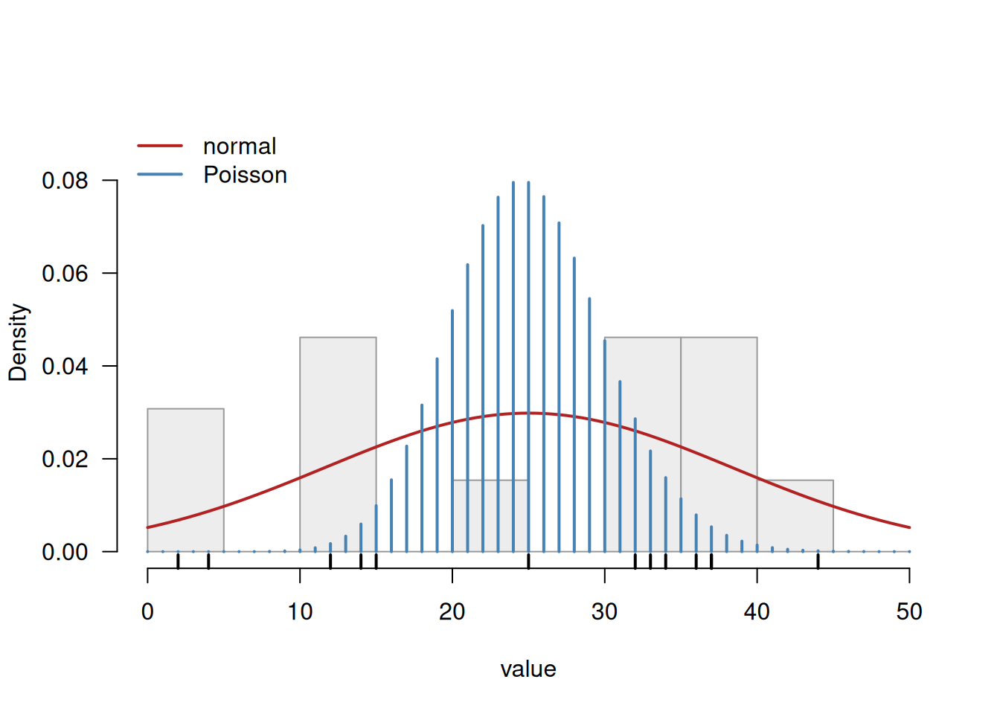
The picture speaks for itself. The Poisson spikes form a narrow bundle around 25 with essentially no probability below 12 or above 40, while five of the thirteen observations lie outside exactly that region. The normal curve is wide enough to accommodate the whole range.
e. Caution is in order. With \(n = 13\) the estimates are imprecise, as the standard errors show: the mean is estimated as \(25 \pm 3.7\) and the standard deviation as \(13.4 \pm 2.6\), so a standard deviation of 10 or 18 would also be quite compatible with these data. What we may safely conclude is the negative result — the Poisson distribution is untenable, because the discrepancy of 70 BIC units is far larger than any sampling uncertainty could explain. The positive claim, that the normal distribution is the correct one, rests on much weaker ground: with 13 observations several other distributions would fit about as well, and as Exercise 5 showed, no test would be able to distinguish between them at this sample size. And of course we have no idea what these numbers actually are, which in practice is the strongest argument of all — the choice of distribution should follow from the process that generated the data (Dormann, Sect. 3.5).
Exercise 7
Count data are common in biology, and the Poisson distribution is the obvious first candidate. Use quine$Days, the number of days that each of 146 Australian schoolchildren was absent from school (see ?quine).
- Calculate the mean and the variance of
Days. Calculate the ratio variance/mean. What is this ratio for a true Poisson distribution, and what do we call the situation you observe here (Dormann, Sect. 3.4.4)? - Fit a Poisson and a negative binomial distribution with
fitdistr()and compare them with AIC and BIC. How large is the difference, and what does a difference of this size mean? - Compare the observed number of children in a few count classes with the number expected under each of the two fitted distributions, and plot the three sets of frequencies next to each other in a barplot. Which parts of the range does the Poisson distribution get badly wrong?
- Would it be sensible to use
ks.test()here to decide between the two distributions? Explain.
Answer
a. The same diagnostic as in the previous exercise:
days <- quine$Days
c(n = length(days), mean = mean(days), variance = var(days),
ratio = var(days) / mean(days), maximum = max(days), zeros = sum(days == 0)) n mean variance ratio maximum zeros
146.00000 16.45890 264.16726 16.05011 81.00000 9.00000 For a Poisson distribution mean and variance are equal, so the ratio should be about 1. It is 16. These data are strongly overdispersed, and the negative binomial distribution is the standard remedy: it is the count distribution that has an extra parameter precisely to let the variance exceed the mean (Dormann, Sect. 3.4.5).
b. Both fits:
fit_pois <- fitdistr(days, "Poisson")
fit_nb <- fitdistr(days, "negative binomial")
fit_pois lambda
16.4589041
( 0.3357562)fit_nb size mu
1.0667932 16.4589041
( 0.1292224) ( 1.3608854)round(sapply(list(Poisson = fit_pois, negative_binomial = fit_nb),
function(f) c(logLik = as.numeric(logLik(f)),
AIC = AIC(f), BIC = BIC(f))), 2) Poisson negative_binomial
logLik -1331.00 -559.13
AIC 2664.01 1122.27
BIC 2666.99 1128.23The difference is gigantic: an AIC of 2664 against 1122, a gap of more than 1500 units. Differences of 2 are already worth mentioning and differences of 10 are decisive, so this is not a close call. The negative binomial fit uses one parameter more (size and mu against only lambda) and pays a penalty of 2 AIC units for it — utterly negligible against an improvement of 772 in the log-likelihood.
Note that the estimated mu of the negative binomial distribution equals the Poisson lambda and both equal the sample mean, 16.46. The two distributions agree entirely about the mean; they disagree about the spread. The size parameter of 1.07 is the dispersion parameter: the smaller it is, the more overdispersed the data (as size goes to infinity the negative binomial distribution becomes the Poisson distribution).
c. Observed against expected frequencies:
breaks <- c(-1, 0, 5, 10, 15, 20, 30, 40, 100)
observed <- table(cut(days, breaks = breaks))
n <- length(days)
upper <- breaks[-1]
lower <- breaks[-length(breaks)]
exp_pois <- n * (ppois(upper, lambda = fit_pois$estimate) -
ppois(lower, lambda = fit_pois$estimate))
exp_nb <- n * (pnbinom(upper, size = fit_nb$estimate["size"],
mu = fit_nb$estimate["mu"]) -
pnbinom(lower, size = fit_nb$estimate["size"],
mu = fit_nb$estimate["mu"]))
counts <- rbind(observed = as.numeric(observed),
Poisson = exp_pois,
negative_binomial = exp_nb)
colnames(counts) <- names(observed)
round(counts, 1) (-1,0] (0,5] (5,10] (10,15] (15,20] (20,30] (30,40] (40,100]
observed 9.0 36.0 24.0 23.0 12.0 17.0 11.0 14.0
Poisson 0.0 0.1 9.1 52.4 61.2 23.1 0.1 0.0
negative_binomial 7.4 34.3 26.7 20.1 15.0 19.4 10.6 12.2barplot(counts, beside = TRUE, las = 1,
col = c("grey40", "steelblue", "firebrick"),
xlab = "days absent from school", ylab = "number of children",
legend.text = c("observed", "Poisson", "negative binomial"),
args.legend = list(x = "topright", bty = "n"))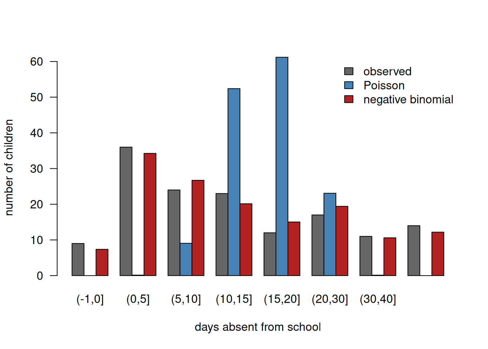
The table makes the failure of the Poisson distribution concrete, and it fails at both ends. It expects essentially no children with 0 days absent (0.0 against 9 observed) and virtually none in the class 1-5 days (0.2 against 36 observed), while at the other end it expects nobody above 40 days (0.0 against 14 observed). Instead it piles almost everything into the middle classes: 61 children expected in the class 15-20 days against 12 observed. This is the direct consequence of the variance being locked to the mean: the Poisson distribution simply cannot be this wide. The negative binomial expectations follow the observed frequencies much more closely across the whole range.
d. No. The Kolmogorov-Smirnov test is derived for continuous distributions, and both candidates here are discrete. Applying it to count data means that the entire data set consists of ties — with 146 observations and only a few dozen distinct values, R’s warning about ties would be the least of the problem: the exact null distribution of D simply does not apply. Furthermore, ks.test() compares the data with one distribution at a time; it is a goodness-of-fit test, not a model-selection tool. For discrete data the appropriate alternatives are the comparison of AIC/BIC values that we did in (b), a \(\chi^2\) goodness-of-fit test on the observed and expected counts from (c), or simply the graphical comparison — which here is the most convincing evidence of all.
Exercise 8
In this final exercise we cheat: we generate the data ourselves, so for once we know the true answer. This is a variant of exercises 5 and 6 in Sect. 4.5 of Dormann.
- Choose a location and a scale for the logistic distribution (not the default values of 0 and 1) and simulate 100 observations with
rlogis(). Useset.seed()so that your results are reproducible, and store the sample in an object. Make a histogram of the simulated values with the true density curve (dlogis()with your parameter values) drawn on top. - Plot the empirical cumulative distribution function of your sample and draw the true cumulative distribution function (
plogis()with your parameter values) on top. Describe the discrepancy between the two. Nothing is wrong here: this is simply the difference between a random realisation and the truth. - Repeat (b) with a sample of 20 and a sample of 2000 observations from the same distribution. What happens to the discrepancy, and what is the name of the principle you are demonstrating?
- Now pretend you do not know the truth: fit a logistic distribution to your sample of 100 with
fitdistr(). Compare the estimates with the values you used to simulate. Are the true values within roughly two standard errors of the estimates? - Calculate the log-likelihood of these data “by hand” by summing
dlogis(..., log = TRUE)at the fitted parameters, and check the result againstlogLik(). - Finally, also fit a normal distribution to the same 100 simulated values and compare the two fits with AIC. Does the criterion select the distribution that actually generated the data? Plot both fitted densities on top of the histogram and comment on how easy or hard it is to tell these two distributions apart with only 100 observations.
Answer
a. We choose location = 5 and scale = 2. set.seed() fixes the random number generator so that the results are reproducible; without it you would get different numbers every time (which is instructive to try).
true_location <- 5
true_scale <- 2
set.seed(42)
sim <- rlogis(100, location = true_location, scale = true_scale)
hist(sim, breaks = 15, probability = TRUE, col = "grey93", border = "grey60",
las = 1, xlab = "simulated value", main = "")
rug(sim)
curve(dlogis(x, location = true_location, scale = true_scale),
add = TRUE, lwd = 2, col = "firebrick")
legend("topright", bty = "n", lwd = 2, col = "firebrick",
legend = "true density logistic(5, 2)")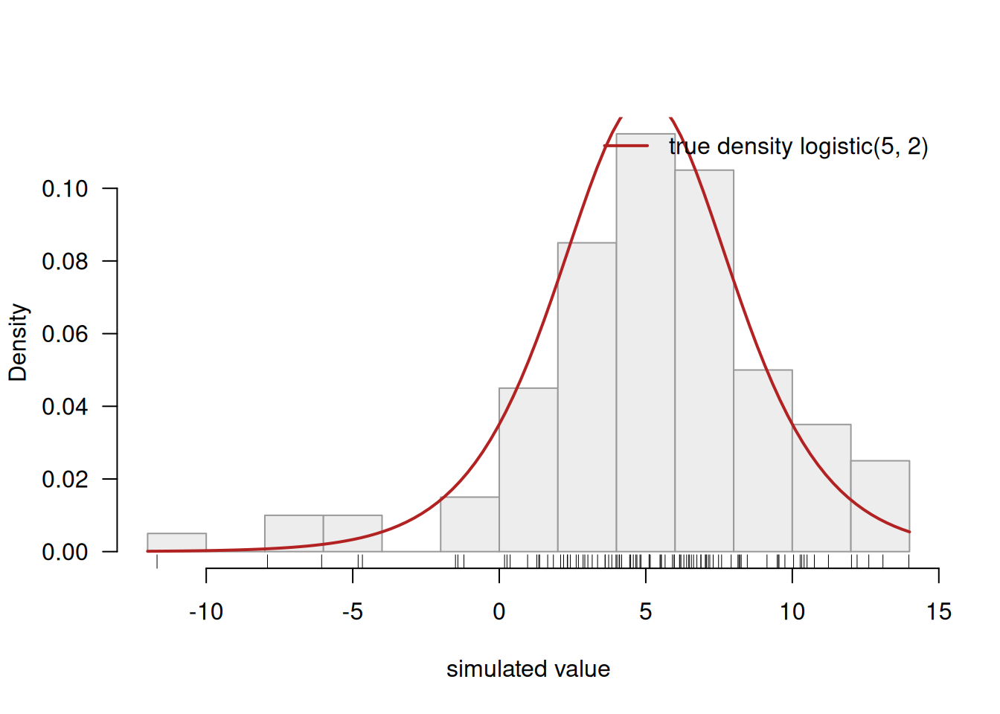
The histogram follows the curve in outline, but bar by bar there are clear deviations: some classes have too many values, others too few. Remember that the histogram is the truth here in the sense that these really are values from this distribution — the deviations are pure sampling variation.
b. The cumulative version of the same comparison:
plot(ecdf(sim), verticals = TRUE, pch = "", las = 1,
main = "", xlab = "value", ylab = "Fn(x)")
curve(plogis(x, location = true_location, scale = true_scale),
add = TRUE, lwd = 3, col = "firebrick")
lines(ecdf(sim), verticals = TRUE, pch = "")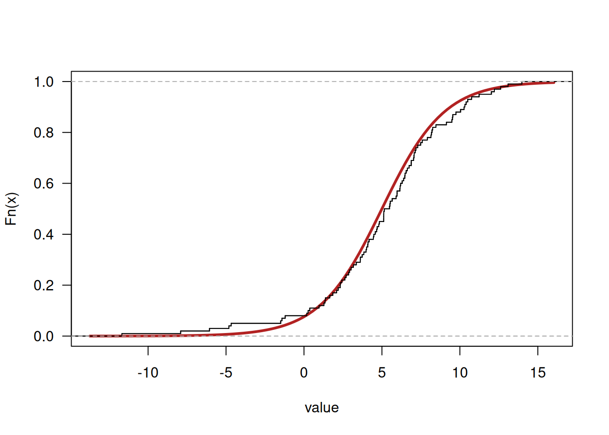
The staircase wanders around the smooth curve, sometimes above it and sometimes below, with the largest gaps in the middle where the data are densest. This is worth dwelling on: we know with certainty that the red curve is correct, and yet the data deviate visibly from it. Whenever you judge a fit to real data, this is the amount of discrepancy you should regard as normal.
c. The same picture at three sample sizes:
par(mfrow = c(1, 3), mar = c(4, 4.5, 3, 1))
set.seed(42)
for (n in c(20, 100, 2000)) {
sample_n <- rlogis(n, location = true_location, scale = true_scale)
plot(ecdf(sample_n), verticals = TRUE, pch = "", las = 1, xlim = c(-8, 18),
main = paste("n =", n), xlab = "value", ylab = "Fn(x)")
curve(plogis(x, location = true_location, scale = true_scale),
add = TRUE, lwd = 3, col = "firebrick")
lines(ecdf(sample_n), verticals = TRUE, pch = "")
}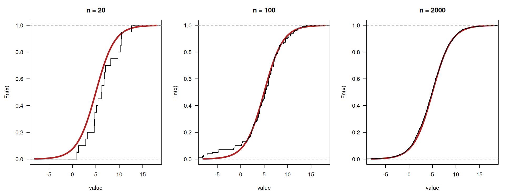
par(mfrow = c(1, 1))With \(n = 20\) the staircase is coarse and can be far from the curve; with \(n = 100\) it follows the curve reasonably; with \(n = 2000\) the two are almost indistinguishable. This is the law of large numbers: as the number of observations grows, the relative frequencies converge to the underlying probabilities. It is also the reason why the estimators of Sect. 3.3 are called consistent — with more data the estimate approaches the true value — and why the tests in Exercise 5 become so sensitive at large n: the sampling noise shrinks, so any systematic deviation stands out.
d. Now we forget that we know the answer and let fitdistr() estimate the parameters:
fit_logis <- fitdistr(sim, "logistic")
fit_logis location scale
5.2961717 2.2793268
(0.3907025) (0.1926476)rbind(
estimate = fit_logis$estimate,
std_error = fit_logis$sd,
truth = c(location = true_location, scale = true_scale),
lower_2se = fit_logis$estimate - 2 * fit_logis$sd,
upper_2se = fit_logis$estimate + 2 * fit_logis$sd
) location scale
estimate 5.2961717 2.2793268
std_error 0.3907025 0.1926476
truth 5.0000000 2.0000000
lower_2se 4.5147668 1.8940315
upper_2se 6.0775767 2.6646221The estimates are \(\hat{\text{location}} = 5.30\) and \(\hat{\text{scale}} = 2.28\), against true values of 5 and 2. Both true values lie comfortably inside the interval “estimate \(\pm\) two standard errors” (4.51 to 6.08 and 1.89 to 2.66), so maximum likelihood has done its job. But note how wide those intervals are: with 100 observations we cannot pin the scale down more precisely than “somewhere between 1.9 and 2.7”. The estimates are not the truth, they are a good guess with a quantified uncertainty — which is exactly what the second line of fitdistr() output is for.
e. The log-likelihood by hand, exactly as in Exercise 2:
ll_by_hand <- sum(dlogis(sim,
location = fit_logis$estimate["location"],
scale = fit_logis$estimate["scale"],
log = TRUE))
c(by_hand = ll_by_hand, from_logLik = as.numeric(logLik(fit_logis))) by_hand from_logLik
-283.8571 -283.8571 Identical, as it should be: fitdistr() found its estimates precisely by maximising this sum. As a check that it really is a maximum, the log-likelihood at the true parameter values must be slightly lower than at the estimates — the estimates are, by construction, the best possible values for this sample:
c(at_estimates = ll_by_hand,
at_true_values = sum(dlogis(sim, location = true_location,
scale = true_scale, log = TRUE))) at_estimates at_true_values
-283.8571 -285.4908 f. The comparison with a distribution that did not generate the data:
fit_normal_sim <- fitdistr(sim, "normal")
fit_normal_sim mean sd
5.0513858 4.3063272
(0.4306327) (0.3045033)round(sapply(list(logistic = fit_logis, normal = fit_normal_sim),
function(f) c(logLik = as.numeric(logLik(f)),
AIC = AIC(f), BIC = BIC(f))), 2) logistic normal
logLik -283.86 -287.90
AIC 571.71 579.80
BIC 576.92 585.02The AIC does select the correct distribution: 571.7 for the logistic against 579.8 for the normal. Both have two parameters, so the penalty is identical and the ranking follows the log-likelihood directly. A difference of 8 AIC units is substantial, so in this case the criterion gives a clear and correct answer.
The graphical comparison is much less impressive:
hist(sim, breaks = 15, probability = TRUE, col = "grey93", border = "grey60",
las = 1, xlab = "simulated value", main = "")
rug(sim)
curve(dlogis(x, fit_logis$estimate[1], fit_logis$estimate[2]),
add = TRUE, lwd = 2, col = "firebrick")
curve(dnorm(x, fit_normal_sim$estimate[1], fit_normal_sim$estimate[2]),
add = TRUE, lwd = 2, col = "steelblue")
legend("topright", bty = "n", lwd = 2, col = c("firebrick", "steelblue"),
legend = c("fitted logistic", "fitted normal"))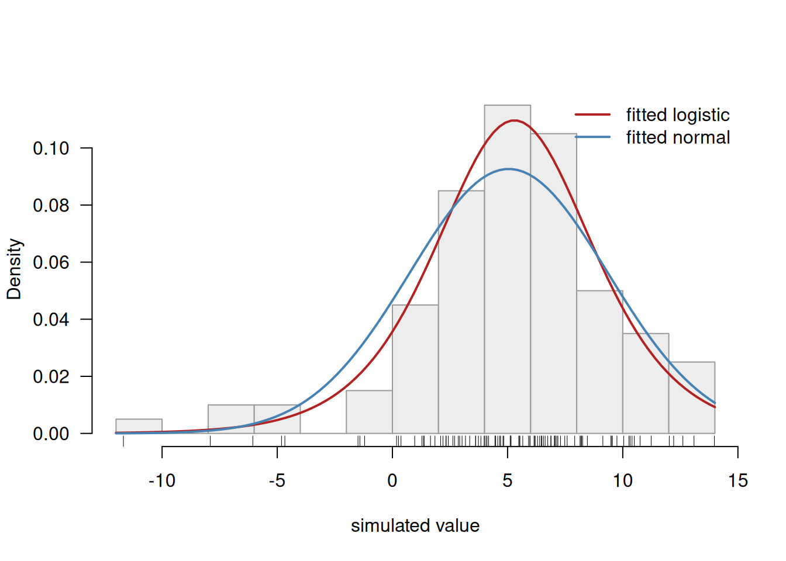
The two curves are almost on top of each other. Both are symmetric and bell-shaped; the logistic distribution merely has a slightly sharper peak and heavier tails, and that small difference in the tails is where the eight AIC units come from. No one could reliably pick the winner from this picture, and indeed a Shapiro-Wilk test would happily reject normality here while a KS test against the fitted logistic does not:
shapiro.test(sim)
Shapiro-Wilk normality test
data: sim
W = 0.94834, p-value = 0.0006464ks.test(sim, "plogis", fit_logis$estimate[1], fit_logis$estimate[2])
Asymptotic one-sample Kolmogorov-Smirnov test
data: sim
D = 0.043981, p-value = 0.9903
alternative hypothesis: two-sidedTwo lessons to close the practical with. First, fitdistr() and the AIC do work: they recovered both the right parameters and the right distribution. Second, they are working with small margins. Distinguishing between similar distributions demands a great deal of data, and even when the criterion points the right way the practical difference between the two fits may be negligible. The choice of a distribution should therefore rest primarily on knowledge of the process that generated the data — counts, proportions, waiting times, sums of many small contributions — and only secondarily on the numbers that come out of a fit (Dormann, Sect. 3.5).